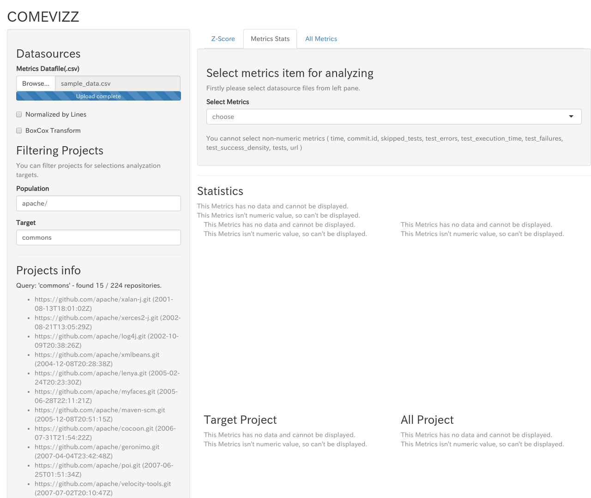
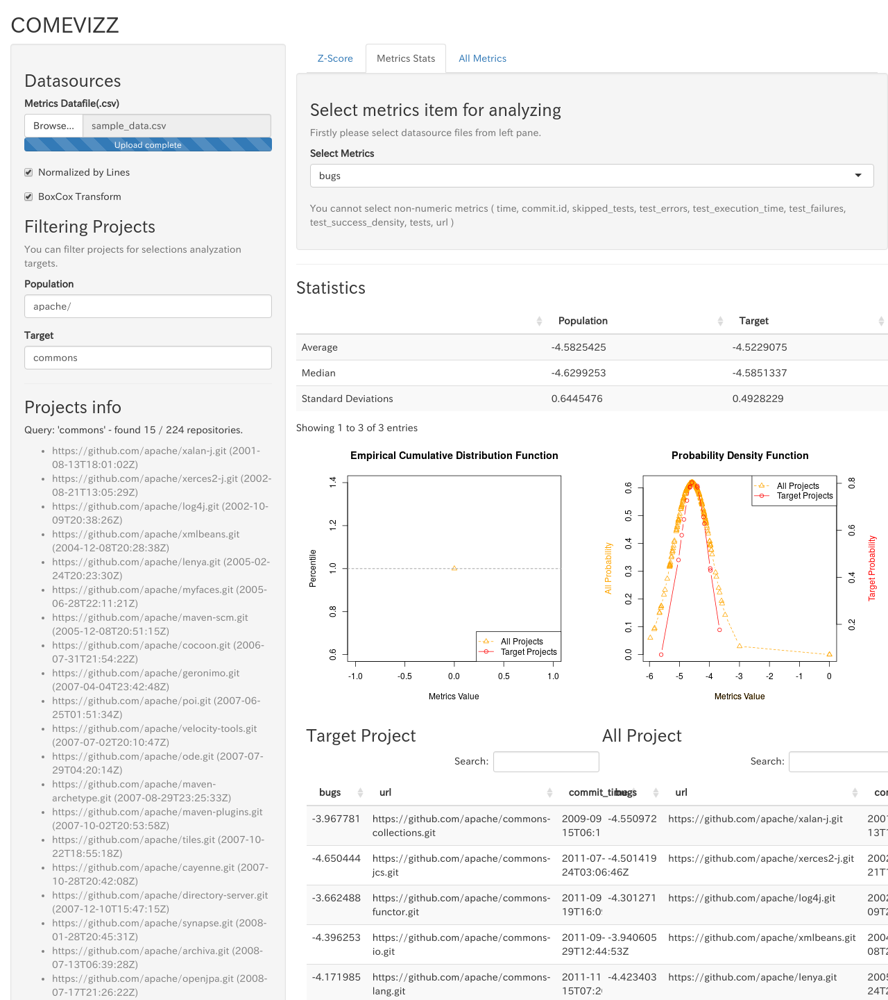

Usage of comevizz
Reading csv file of metrics data
Select metrics csv file from Browse... button.
Refer Appendix B. The Format of Metrics Data File about the requirements of the csv file for metrics data.
When loading the metrics data file is completed, you can see the following screen.

Display Z-Score
You can see Z-Score Radar chart from Metrics Z-Score tab.
See Appendix C. How to calculate Z-Score about Z-Score.
COMEVIZZ displays Z-Score Radar chart for target projects filtered by Filtering population and target.
For example, when you select Apache projects as population and commons-* projects as target projects, you can see the following screen.

If you do not select any target projects, All Z-Score will be 0.
Select metrics types for Z-Score Radar chart
Select the set of metrics types
You can select the sets of metrics types from Select Metrics Sets on the right pane.
| Metrics Set Name | Metrics types |
|---|---|
| Issues | bugs, code_smells, vulnerabilities |
| Violations | blocker_violations, critical_violations, info_violations, major_violations, minor_violations, violations |
| Complexity | class_complexity, complexity, function_complexity |

Select metrics by yourself
You can select specific metrics from Select Metrics on the right pane. Selectable metrics are generated from the headers of metrics data csv file.

Display the statistical information
By selecting metrics type, you can see the statistical information of the selected metrics.


- Average / Median / Standard Deviation
- See Filtering the Population and Target about filtering population and target projects
- Cumultive distribution function
- Probabilistic density funciton
- Data table about metrics values
Filtering population and target
You can filter projects for displaying from Filtering Projects on the left pane.

The results of filtering will be displayed on Projects Info.
Population
You can filter projects as a population by using regular expresison for url string.
Example 1: In case of filtering Apache projects published in github.com as a population,
gihtub.com/apache/
Example 2: In case of filtering Apache and spring-projects projects published in github.com as a population,
gihtub.com/apache/|github.com/spring-projects
Target
Filtering projects as a target for statistical analysis and Z-Score by using regular expression for url string.
Target projects must be included in the populations.
Normalize by lines
By checking Normalize by lines, you can normalize the selected metrics values by dividing by Lines metrics value.

Transform metrics distributions to normal distribution
By checking BoxCox Transform, you can transform metrics distributions to normal distribution by BoxCox Transformation.
